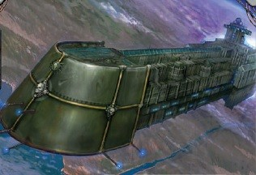

Chartist Captain
| Chartist Captain | |
|---|---|
Emblem of the Imperial Navy Artwork © Games Workshop | |
 The Chartist vessel Misericord of the Calixis Sector, from a pict-capture Artwork © Games Workshop | |
| Notable holder Kania Dhanda Speaker for the Chartist Captains, in the Senatorum Imperialis | |
| Imperial Navy Speaker for the Chartist Captains Administratum Senatorum Imperialis | |
| Style | Chartist Captain; Free Captain |
| Type | Master of a chartered merchant starship |
| Member of | The merchant fleets of the Imperial Fleet |
| Reports to | The Speaker for the Chartist Captains; the charter's grantor |
| Seat | Nexus Axiomatic, Terra |
| Appointer | The Administratum, by a Merchant Charter granted for a Segmentum |
| Term length | For the term of the charter |
| Formation | c. M31[a] |
| Share of shipping | About nine-tenths of the Imperium's Warp-capable vessels |
A Chartist Captain, also called a Free Captain, is the master of a merchant starship of the Imperium of Mankind that sails under a Merchant Charter granted by the Administratum. The charter sets out the ship's route, its cargo and its rights, and binds the captain by oath to the fleet authorities of the Segmentum in which it operates. The vessels of the Chartist Captains form the merchant fleets of the Imperium, about nine-tenths of all its warp-capable ships, and carry most of its trade, its tithes and its travellers.[1][2]
Chartist vessels are vast, slow and often ancient. Most travel without a Navigator, making short warp jumps along known routes, and a round voyage may take years or generations. Many of their crews are voidborn, people born aboard ship who may never stand on a planet. For many isolated worlds the arrival of a Chartist ship is the only contact with the wider Imperium.[2]
Chartist Captains are not Rogue Traders: they have no Warrant of Trade and no freedom to leave their routes or the Imperium. In return their routes are guaranteed by segmentum authorities, which gives them a security that Rogue Traders lack, and their guild is represented in the Senatorum Imperialis by the Speaker for the Chartist Captains.[3]
History
[edit]During the Great Crusade (c. 798.M30 – 000.M31) merchant and supply vessels followed the expeditionary fleets, carrying materiel to the armies and colonists to newly compliant worlds. After the Horus Heresy (005–014.M31) the Imperial Fleet was reorganised, and its commercial vessels were placed under segmentum fleet authorities as the merchant fleets, each based at its Segmentum Fortress. The merchant fleet of the Segmentum Solar is administered from Mars, and that of the Segmentum Obscurus from Cypra Mundi. The charter system dates from these reforms.[2]
In the following millennia Chartist Captains became essential to every part of the Imperium. They carried the tithes of the Administratum, supplied the armies of crusades, and maintained the trade of whole sectors. Some Chartist houses have held their charters for many thousands of years. The Chartist vessel Bountiful Beast of the Calixis Sector is said to have entered the sector with the Angevin Crusade in M39, after which its master took a charter that his family, the D'Rais, has held ever since.[4]
The opening of the Great Rift in 999.M41 and the Noctis Aeterna that followed stranded thousands of Chartist vessels in the warp or on far sides of the Rift. Many were lost. In the Era Indomitus the surviving merchant fleets have been pressed into the service of the Indomitus Crusade as supply ships and troop transports.[5]
The Merchant Charter
[edit]To trade lawfully, a merchant captain must obtain a Merchant Charter from the Administratum, which admits his vessel to a segmentum's merchant fleet. Charters vary: favoured captains may receive broader trading rights or more profitable routes. All are feudal contracts. Before his ship is registered, the captain swears an oath before the fleet authorities of his segmentum to obey them in the Emperor's name, and a record of the oath is lodged at the Segmentum Fortress and in the archives of the Segmentum Solar. The charter fixes:[2]
- the route, often a circuit of several worlds that the ship must visit in turn;
- the cargoes it may carry, including tithes, passengers and goods;
- its duties in time of war, when chartered vessels may be requisitioned by the Imperial Navy or the Departmento Munitorum.
The coordination of the merchant fleets' routes across the Imperium is carried out at the Nexus Axiomatic on Terra by the Magisters Calculo Horarium, calculators so heavily modified that many survive only in life-support vats.[2]

Ships and crews
[edit]Chartist ships range from small traders of the Vagabond class to vessels many kilometres long, assembled over the centuries from several hulls joined together. The Misericord, which sails between Scintilla, Iocanthus and Sepheris Secundus in the Calixis Sector, is a well-known example: a ship of castles, halls and dungeons, whose crew is divided into hereditary castes, and which planetbound folk regard as ill-omened.[4]
Voidborn crews have their own customs and dialects, and are widely mistrusted by planet-dwellers as clannish and unlucky. Chartist Captains themselves range from the masters of a single tramp freighter to the heads of great merchant houses with fleets of their own and seats in the courts of sector governors.[2]
Relations with other powers
[edit]- Imperial Navy. The Navy protects the merchant fleets and may requisition their ships; the fleet authorities of each segmentum govern both.
- Navis Nobilite. Few Chartist ships can afford a Navigator. Those that do contract with a Navigator house, often at ruinous cost.
- Rogue Traders. Rogue Traders often regard Chartist Captains as lesser merchants; Chartist houses resent the freedom of the Warrant of Trade.
- Inquisition. Chartist vessels are a common route for smuggled heretics, xenos goods and psykers fleeing the Black Ships, and Inquisitors frequently travel aboard them.
Political influence
[edit]Because the merchant fleets carry the tithes and the trade of the whole Imperium, their captains hold more political weight than their status as chartered merchants would suggest. The greater Chartist houses keep agents at the courts of sector governors and at the Segmentum Fortresses, and their guild's Speaker sits in the Senatorum Imperialis, the wider council of Terra from which the High Lords of Terra are drawn. The withholding of shipping can bring a world to famine, and several planetary rebellions have been ended, or begun, by the decisions of Chartist Captains. The Administratum, for its part, can revoke a charter and transfer a profitable route to a rival house, which keeps most captains obedient.[3][1]
Notable Chartist vessels
[edit]| Vessel | Region | Master or house | Since | Known for |
|---|---|---|---|---|
| Misericord | Calixis Sector | Successive captains | early in the sector's history, after M39 | Composite ship of hereditary castes; said to bring ill luck to ports |
| Bountiful Beast | Calixis Sector | House D'Rais | M39 | Livestock ship, sixteen kilometres long |
Timeline
[edit]| Date | Event |
|---|---|
| c. 798.M30 – 000.M31 | Supply ships follow the fleets of the Great Crusade |
| c. M31 | Merchant fleets organised by segmentum after the Horus Heresy; charter system established |
| M39 | The Bountiful Beast enters the Calixis Sector with the Angevin Crusade |
| 999.M41 | The Great Rift strands thousands of Chartist vessels |
| 000.M42 onward | Merchant fleets supply the Indomitus Crusade |
See also
[edit]Notes
[edit]- ^ Chartered merchant shipping is recorded from the Great Crusade; the present charter system is dated by Administratum tradition to the reorganisation of the Imperial Fleet after the Horus Heresy, an estimate from the sequence of those reforms.